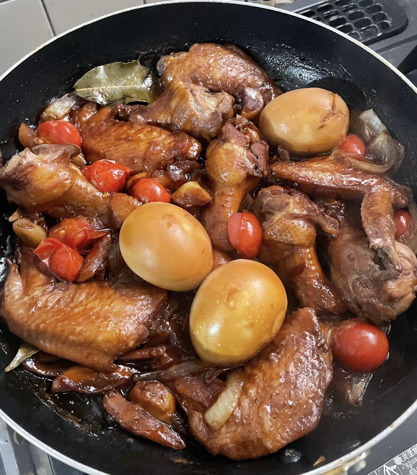

One of, if not one of the most popular dishes in the Philippines. The use of vinegar (or other acidic agents like calamansi juice) to preserve food had been present in pre-colonial Philippines and has since evolved over the centuries, remaining a beloved meal that's cooked at home, found at street markets, or at huge festivals. There are countless variations of adobo depending on region, or even the family making it. Variations of the dish include the use of coconut milk, chili peppers, and lemon grass. Some adobos are saucier than others too. Mas sarap (I think?? My tagalog has always been horrid)